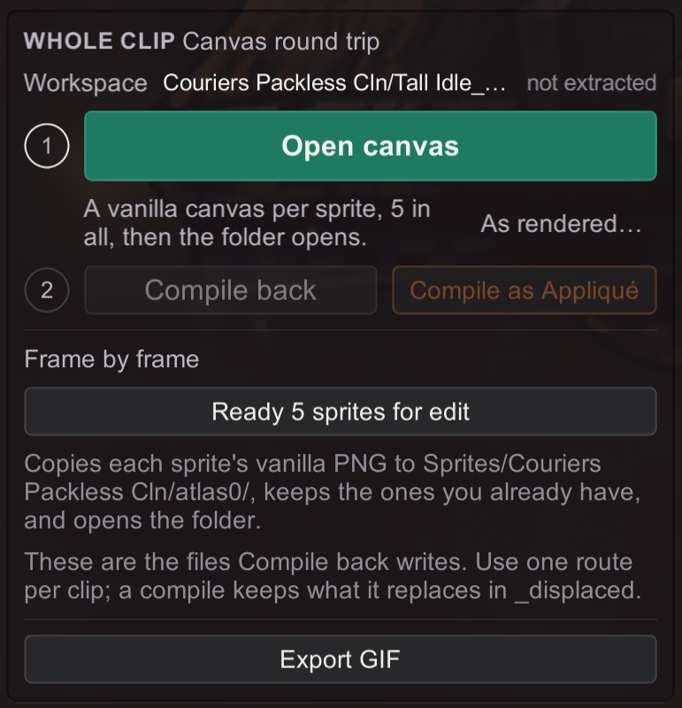

B6 Animation Canvas Workflow
Sprites · for creators (advanced).
Paint a whole animation on one steady canvas, with onion skin and room past the original edges.
Then compile it back into sprite files.
You'll be able to: extract an animation clip onto a uniform editing canvas, edit it with real onion-skinning, and compile it back to runtime files — and know exactly where the feature is solid and where it's still young.
Before you start: B1 (the basic dump-edit loop) and a feel for finding sprites. This is the deep end of sprite work.
Why this exists
The game stores each animation frame cropped tight, at its own size, with its own pivot. Frames of different sizes are awkward to bring into any animation software: they do not line up, so you cannot onion-skin them or compare one frame with the next. On the spritesheet, the packer also stores some frames mirrored, so Hornet does not face the same way in every frame.
The canvas exports every frame of a clip:
- At one shared size, so the frames stack as layers or play as one animation.
- With room around the art, for comfortable drawing and for designs that grow past the original edges. You set the room when you export, and what you draw there is kept in the final art.
- Aligned on the pivot, so a fixed point (an eye, a foot) sits on the same pixel in every frame.
- Facing one way, so Hornet faces the same direction in every frame.
Compile turns the canvases back into the game's format, and writes the placement tags for bigger art itself. (Custom Knight Creator did the same round trip for Hollow Knight.)
You never align frames by hand.
The controls
All in Graphics (3), Animation mode: select the clip, then look at the Whole clip group in the console ("Canvas round trip"). It has two numbered steps:
- Open canvas — Phase 1: it starts from the original art (the safe default). As rendered…, beside it, starts from whatever's currently applied instead (to iterate on prior work — see below).
- Compile back — Phase 2: it folds your edits back into replacements. Compile as Appliqué beside it lands the result in one clip only (Appliqué).
Above the steps, the Workspace row names the folder (Collection/clip_WIP) and says on disk or not extracted. Once a workspace exists, a detail line tells you when and how it was extracted and how many of its canvases you've edited. Compile back stays disabled until the clip has a workspace.
Canvas room, the lever under Open canvas, sets the room around the art on each side, as a share of the art's size (default 0.50; 0.10 to 1.00). At 0.50, the canvas is about twice the size of the art. Every new extract uses it. A workspace keeps the room that it was extracted with, and its detail line shows it, for example room 0.50. When your art reaches the canvas edge, the compile note says so: raise Canvas room, then start over.
Mirror, the switch under Canvas room, turns every frame the other way. On the canvas, Hornet faces right; with Mirror on, she faces left. Compile turns the art back, so the game gets the same result. A workspace keeps the facing that it was extracted with, and its detail line says mirrored. When you start over and the new extract would face the other way, the dialog tells you.

Phase 1 — Extract
Select the clip in the list (for example Hornet's Idle). Click Open canvas. Stitchwork renders every frame onto one uniform canvas, with the room and the pivot alignment that Why this exists describes.
Vanilla vs. As rendered. Open canvas pulls the original sprites even with one of your own packs active — you edit the real thing, not your half-finished skin. As rendered… instead reads the live atlas as drawn right now — everything applied, packs and your working folder, individual Sprites/ and whole Spritesheets/ — so you can reopen and keep editing prior work. (Enable just your own art first, since "as rendered" means whatever's on screen.) One exception: per-clip (Appliqué) art never goes onto the canvas; those frames show their shared or vanilla art, and the log says so.
Extracting needs the Rotate shader from stitchwork.assetbundle. If it didn't load, the Whole clip group says so and the extract buttons are disabled: install the assetbundle that came with your Stitchwork.
The output lands in a workspace folder beside the collection:
Sprites/{CollectionName}/{ClipName}_WIP/— one PNG per distinct frame (held/reused frames are de-duplicated), plus a {ClipName}_sidecar.yml. The folder opens automatically.
Clips that share a name
A crest can replace one of Hornet's animations with its own clip of the same name, often drawn from the same collection. That clip gets its library's name in the folder, so its canvases never mix with the other clip's:
Sprites/{CollectionName}/{ClipName} ({LibraryName})_WIP/The clip list shows the library beside each of these clips. If a workspace holds another clip's frames, compile refuses it and writes nothing: extract again, then paste your drawing into the new canvases.
Editing
Open the _WIP PNGs in your editor or animation tool. Because they're identically sized and registered, you can load them as onion-skin layers and paint with every other frame visible underneath. And the canvas is padded, so you can draw past the original silhouette — a longer needle, a billowing cloak — without running out of room. The canvas edge is the limit, though (see Canvas room above): when the art of a grown frame touches the edge, the compile log warns that art past the edge is lost.
The canvas is in the same orientation as your SpriteDumper dumps, so it lines up with the rest of your dumped art rather than mirroring it.
Two don'ts:
- Don't hand-edit the
_sidecar.yml. It carries the registration data compile needs to fold each frame back precisely. Leave it alone. For a clean slate, click Open canvas… on a clip that already has a workspace: Keep working just opens the folder, while Start over from vanilla and Start over as rendered extract fresh canvases. Your current canvases move into a_replaced-…/folder inside the workspace first, so nothing you painted is lost. - Don't resize the canvas. Keep each PNG at the dimensions extract issued. Compile checks them and will skip a frame whose size changed rather than guess where the art moved. Compile reads the canvas size from the workspace, never from the Canvas room lever.
Don't ship the _WIP folder. It's an editing workspace — Stitchwork deliberately excludes it from loading. What you ship is the ordinary Sprites/ output compile produced.
Phase 2 — Compile
Click Compile back. Stitchwork reads each edited frame and folds it back to the runtime format automatically, deciding per frame:
- Untouched → skipped entirely. The extract records a baseline of each frame's pixels; a canvas that still matches it is never written. A reused frame you left alone can never overwrite work from another clip.
- Stayed within the original footprint → dropped straight back into its slot.
- Grew past the footprint → emitted as an oversized replacement with a precise pivot tag so it still registers correctly, and routed to that frame's own collection/material.
When a changed frame replaces existing files, the old files (including old @p variants) are moved into a dated _displaced-…/ folder inside the workspace first — nothing is lost, and stale variants cannot shadow the new file. A changed frame that the clip uses more than once gets a named warning in the log: shared art changes everywhere, and the per-clip compile (Appliqué) is the tool for intentional divergence. Extract a workspace from an older build again once, or its compile writes every readable frame.
It writes the normal Sprites/... replacements into your working folder and logs a per-frame report to BepInEx/LogOutput.log. A short notice on screen — Compiled: {clip} — gives the counts (written, unchanged, skipped) and the first reason a frame was skipped, so "nothing changed" never leaves you guessing. The same result stays under step 2 for the rest of the session. Your edited clip is now live, hot-reloaded like any other sprite work.
A written frame can also be in other clips that are loaded, for example the crest and windy variants of the same clip. Then the notice names those clips: "A written frame is also in {clips}: the change shows there too. To change only this clip, use Compile as Appliqué." Compile as Appliqué never shows this line.
Packs still win. The compile output sits in your working folder, which ranks below every active pack. If an active pack has its own file or whole sheet for one of these sprites, the pack's art shows. Switch that pack off while you work, or Push your result into it.
One route per clip. The individual files that Compile back writes are the same files that Ready N sprites for edit hands you. Pick one way of working for a clip; a compile keeps whatever it replaces in _displaced-…/.
Many clips at once
Under Whole clip, the group Batch · every listed clip works on every clip the list shows — search the list (or click the reuse line to narrow it) first to set the scope. Extract N clips (vanilla) and its As rendered… lay out a canvas for each clip that doesn't have a workspace yet. A clip you've already extracted is skipped, so a batch never replaces your canvases, and N counts only the clips it will extract. Compile N workspaces folds every extracted workspace back in one go, always into the shared files (a batch never compiles as Appliqué). While it runs, the group shows the progress and Cancel, which stops after the clip in progress. Same rules as a single clip, just many at a time.
Soft glow, bloom, and haze
Compile decides what counts as art with an alpha threshold. The default is 16 of 255. This default ignores stray editor residue, but it also ignores the faint fringe of a soft glow — a halo that fades below the threshold gets cut where it crosses it. If your art carries bloom or haze, lower AnimCompileAlphaThreshold (under [Dumping] in Stitchwork.cfg) toward 1. The full fringe then counts as art, for both the cut and the grew-past-the-footprint decision. At low values, keep the canvas free of accidental faint pixels — a stray airbrush dot far from the art grows the emitted sprite to include it. The compile log tells you when it ignored faint pixels, so a clipped-halo surprise points you here.
Made with love, and sourced locally from Bilewater.
Next: reused frames still ripple.
Reused frames still ripple
Extract collapses a clip to its distinct sprites, so it won't hand you the same shared frame twice. But the underlying rule from Reused Frames is unchanged: a sprite shared across animations changes everywhere it's used when you repaint it. The canvas makes editing easier; it doesn't make a shared frame private.
Where it's solid, where it's young
| Area | Status |
|---|---|
Hornet's Idle (all one flip mode) and Dash Upper (a mixed None+Tk2d attack) | Confirmed: extract, onion-skin edit, compile, correct in-game. |
| Shared sprites and Appliqué copies | Extract and compile always use the clip's shared sprites, never its Appliqué copies, even for a clip you compiled as Appliqué before. |
| Mixed flip modes in one clip | Handled. The game stores some frames mirrored in the atlas and flips them at render. The onion-skin canvas normalises every frame to one facing for editing. Compile records each frame's flip mode and turns each frame back to its own atlas-native orientation. |
A None (non-flipped) frame grown past its footprint | Lightly tested. The plain mixed case is confirmed; the oversized-and-non-flipped combination is reasoned-correct but newer. Check that the new pixels land on the right side. |
Frames spanning multiple atlas pages, the TPackerCW flip mode, and heavy motion (bounds swinging far wider than a breathing idle) | Lightly tested. Verify in-game. |
| A preview before compile | Not in this build. A "here's what I'm about to write — OK?" confirmation step is planned. Until then, compile writes directly. It writes only the frames you changed, and any file it replaces moves to _displaced-…/ first (see Phase 2). |
If you have a Sprites/ folder from an older build, move your drawings out of it, then delete it: Stitchwork never reads it.
What a failure looks like: a frame facing the wrong way, a feature that jitters between frames on the canvas, or a grown frame sitting offset in-game. Verify every compiled clip in-game. If one comes back wrong, note the animation name and which symptom — that targeted report is what moves the remaining edges from "lightly tested" to "confirmed."
If you hand-edited Sprites/{Coll}/{Mat}/ files for this clip before extracting, extract As rendered… so that prior art rides along inside the canvas — that's what it's for.
Keep your pack under version control or a quick backup while the feature matures, so an unexpected compile is one undo away.
When to reach for it
- This workflow — when you're repainting an animation as a coherent whole and want motion-aware, onion-skinned editing.
- Individual frames (B1) — for a one- or two-frame touch-up; quicker, no round-trip.
- Porting a finished sheet (B3) — when the work already exists as a CKC export or an older sheet-based skin.
Next
- The oversized-sprite mechanics this builds on → Bigger Art: Anchors
- Which other clips an edit changes → Reused Frames
- Compile this same canvas into art that only ONE clip uses → Appliqué